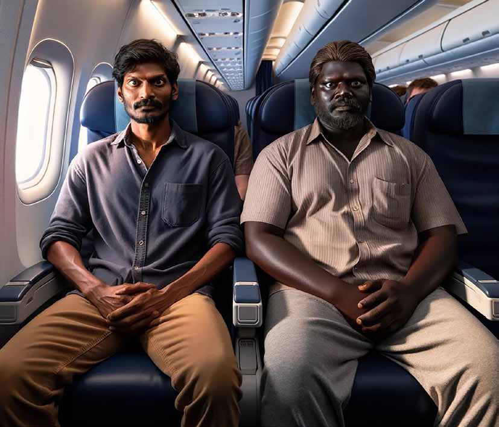
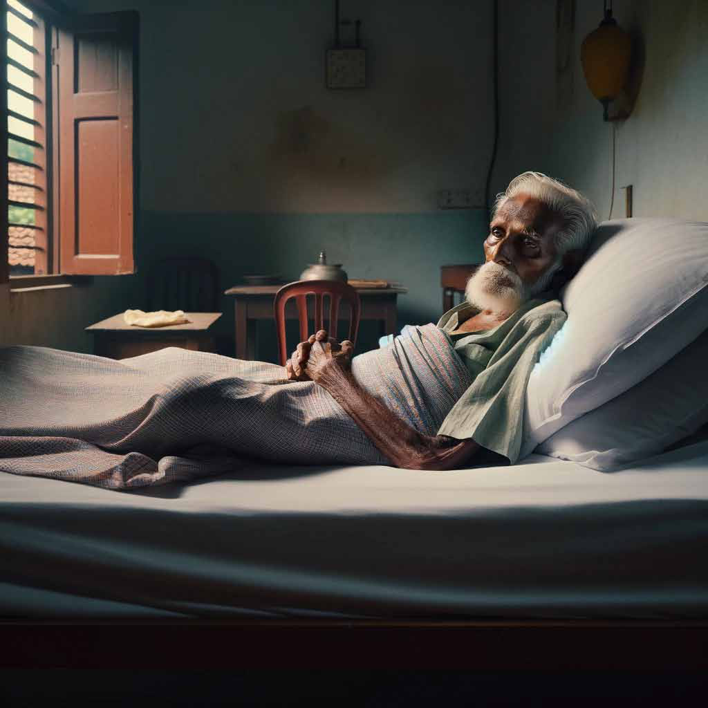
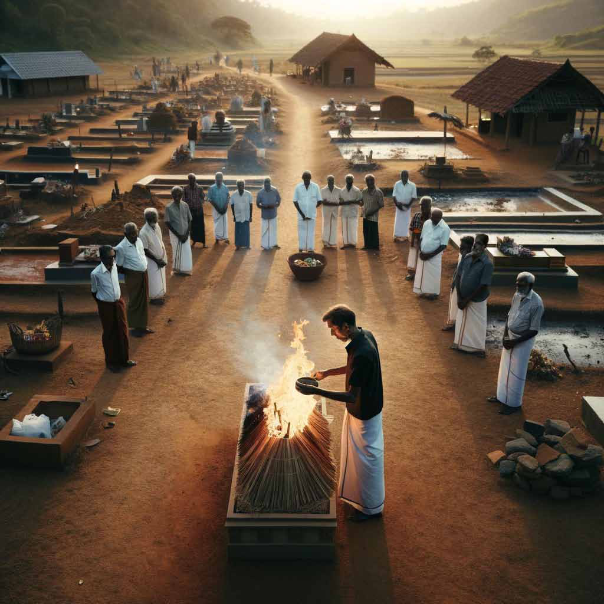

A recent study by the independent think tank Advocata has highlighted the undue financial strain placed on women in Sri Lanka due to current taxation policies. These findings come at a critical time as the country undergoes a review of its bailout program by the International Monetary Fund (IMF), with the delegation including female members, underlining the issue's significance.
A recent study by the independent think tank Advocata has highlighted the undue financial strain placed on women in Sri Lanka due to current taxation policies. These findings come at a critical time as the country undergoes a review of its bailout program by the International Monetary Fund (IMF), with the delegation including female members, underlining the issue's significance.
Jaffna Monitor hellojaffnamonitor@gmail.com 37 A recent study by the independent think tank Advocata has highlighted the undue financial strain placed on women in Sri Lanka due to current taxation policies. These findings come at a critical time as the country undergoes a review of its bailout program by the International Monetary Fund (IMF), with the delegation including female members, underlining the issue's significance. The study reveals that nearly 52% of Sri Lanka's population, which is female, is bearing the brunt of a steep increase in the cost of menstrual hygiene products. This surge has led to around 40% of women, aged between 15 to 47 years, ceasing the purchase of sanitary products, which annually cost them about Rs. 4,500. In the wake of an economic downturn characterized by mismanagement, corruption, and the embezzlement of public funds, the government's emphasis on revenue generation, even at the expense of essential women's products, has been a source of growing concern and criticism. There are fears that such policies might pave the way for more aggressive taxation measures. Despite women's vital role in various economic sectors, their needs are being consistently overlooked in policymaking. This neglect was starkly evident on International Women's Day, where male politicians expressed verbal support for women but did not address the high taxation on critical products such as sanitary napkins. In the nation's Parliament, a handful of female MPs have been vocally pushing for more reasonable pricing of women's hygiene products. However, their campaigns have largely fallen on deaf ears in a legislature dominated by male voices. Notably, Opposition Leader Sajith Premadasa has been an active supporter of this cause, yet he, too, faces ridicule from government MPs. The issue is compounded by the insufficient representation of women in Parliament, signalling a dire need for broader female political participation. There is also a call for more expansive social support initiatives, such as improving school facilities with proper sanitation for underprivileged children. Opposition Leader Premadasa's efforts in enhancing educational infrastructure set an example for other political figures to follow. At the heart of this issue lies an urgent requirement for governmental policy realignment, focusing more on the welfare of its citizens, particularly the vulnerable segments. Addressing the taxation on women's hygiene products and children's school supplies is not only beneficial but essential, intersecting the realms of economic policy, social justice, and gender equality.
Jaffna Monitor
hellojaffnamonitor@gmail.com
38
Story
A
t first I gave the title ‘The X Group’ to this story. It is
a story about two former Tamil militants. Both had
migrated to Europe many years ago as political refugees.
I did not know which militant groups they belonged to or
whether they belonged to the same group. An important
story-telling technique for this story is to advance the
story while keeping the reader wondering which groups
these two men belonged to, sustaining the mystery even
after the story has been told. Therefore, I followed the
hallowed tradition of denoting the unknown by the
The F Group
Translated from the original Tamil
short story F iyakkam (,af;fk;)
by Shobasakthi
Translated by:
Eḻuttukkiṉiyavaṉ
(vOj;Jf;fpdpatd;)

Jaffna Monitor hellojaffnamonitor@gmail.com 39 symbol ‘X,’ to call the story ‘The X Group.’ I was in for a shock when a friend of mine, as soon as he heard the title, asked me, “Is this a story about the Red Front of Tamil Eelamists?” It was only then, after a very long time, I remembered that a Tamil militant group called RFTE did indeed exist until 1985. My friend was a consummate expert on the history of the Eelam struggle. He had in fact authored two research articles on the topic. In confusion, I asked him, “How can you tell me that it is a story about RFTE without even reading the story?” He responded, “The leader of that group was called Xavier. So, X represents the first letter of his name.” I was astonished that he would guess such a connection existed. Although ‘X’ was a common symbol widely used from mathematics to pornographic movies, I did not immediately comprehend that it could also represent the first letter of a militant group leader’s name. On sober reflection, I realized that many such pivots and shifts in meaning had taken place during the past twenty-five years. Earlier, cakkai used to mean pomace or bagasse, the weak, useless stuff that remains after useful juice has been extracted out of fruits or vegetables. But now cakkai refers to a potent explosive that can completely pulverize the target without leaving anything behind. Earlier to put on a poṭṭu was auspicious, but now it referred to making a woman a widow. Even the verb ‘to kill’ has many neologisms in popular usage among Tamil militant groups: ‘dumping’, ‘hitting on the head’, ‘knocking’, and ‘maṭṭai.’ Since I was very keen to not leave any room for readers to guess which militant groups our dramatis personae belonged to, I resolved to look for a different letter instead of ‘X.’ Only when I attempted to find an alternative letter, did it dawn on me that this was not an easy task. English has only twenty-six letters. But our struggle has had thirty-seven militant groups and countless leaders. I started from the letter ‘A’: A — Aruḷar B — Bālakumar C — Chandrahāsaṉ D — Douglas Dēvāṉandā E — EPRLF, ENDLF, and so on F — … G — Gñāṉasēkaraṉ alias Paranthaṉ Rājaṉ H — Hensy Mohaṉ I — Inbam J — Jegaṉ K — Karuṇā L — LTTE M — Muhunthaṉ N — NLFT O — Oberoi Thēvaṉ, .. and so the list continued, leaving only the letter ‘F’ unoccupied. Therefore, I have adapted it. Now let’s see if you can still make guesses. He left Paris on a Lufthansa plane. He would transit in Frankfurt to board the plane to Colombo. After going through checking at Frankfurt, he boarded the plane to Colombo and took his seat. The seat next to him lay empty. His instinct told him that a beautiful German girl would come to take that seat. But the reality was that his instinct was lousy at making predictions that would come true. At least once a month, his instinct had told him that his father would pass away any day. But bedridden and sick, appā was still clinging on to life. Whenever the phone rang in the wee hours of the morning, he expected news of appā’s death. For a long time, he anguished over the question of whether he should go to Sri Lanka to see appā. Sometimes he hoped that if news about appā did indeed arrive, it would deliver him from the suffering of this anguish. Once, when he got drunk in the evening, he slapped himself
Jaffna Monitor hellojaffnamonitor@gmail.com 40 silly as penance for harboring such a thought. It was customary for his friends at work to acquiesce to requests for money from their families and friends in Vavuniya or Colombo. Those requests were for religious festivals like Deepāvaḷi or New Year, or for special occasions like weddings, or for education. But neither his elder sisters nor brothers-in-law ever asked for money for such reasons. They always asked for help in dealing with appā’s illness, like money to take him for treatment in Colombo or India. But it didn’t appear that they ever moved appā even an inch from the mat on the floor where appā languished. Sometimes one sister would ask for money without the knowledge of the other, or they would complain about each other. They came up with new excuses for not taking appā to Colombo for treatment. When he quizzed his brother-in-law about this, the response put the blame squarely on the political situation in the country, flinging obscenities to curse the dead husband of Chandrika Bandaranaike and the

Jaffna Monitor hellojaffnamonitor@gmail.com 41 mother of Ranil Wickremasinghe and the wife of Mahinda Rajapakse. Sometimes he thought if anyone were to ask him, “How long has your father been ill?” he should reply, “From the Chandrika Kumaratunge era.” It seemed like appā was a hostage to his sisters, like a ship that had been boarded by Somali pirates. Appā was of ripe old age. But they would not let the old man die. No abductor would willingly lose possession of the object on which he is demanding ransom. He wondered whether he thinks like this because he had lost his love for his father and siblings. On deeper reflection, he realized that it is not just about appā but that he truly loved no one and no one loved him. He thought that external compulsions pushed one to pretend to love. He often murmured the well-known saying in the diaspora, ‘All familial ties are because of money.’ Just like the greeting ‘vaṇakkam’ or the word ‘visa’, this saying, too, has become a normal part of the diasporic lingo. But last week when his elder sister called him on the phone and said, “Appā will not make it through this time,” and that he wakes up with a start from time to time asking if he had come back to Sri Lanka to see him, he finally decided to go to see his father one last time. When his mother died, he had been in France for just three years. Ammā’s body was cremated without a son at hand to light the pyre. Appā had wept, praying to avoid a similar fate. As soon as he decided to go to Jaffna, his mind went into a tumult. Visions of his village and relatives and friends all trooped into his mind, making him a little afraid. When he imagined wearing a veṭṭi to light appā’s funeral pyre, he felt a sense of unease. When he put on his seat belt in the plane, his instinct told him that the news of appā’s death would await him when he landed. Moments before the plane was ready to depart, a fat, dark-complexioned man walked towards his seat in a somewhat agitated state. The fat man’s eyes darted between him and the empty seat next to him, without even a smile in greeting. Eventually, as if there was no choice, the fat man squeezed into the empty seat with a stern expression, struggled to put the seat belt on, and started reading the German magazine. He glanced furtively at the address tag on the bag that stood behind the fat man’s legs and struggled to read it. It said, ‘Arumaināyagam Theivēnthiraṉ, Dortmund, Germany.’ For half an hour after the plane took off, he had tried everything, clasping and unclasping his fingers, rocking his legs, and so on. He felt that he had reached the point that continued silence was no longer appropriate. He looked at his neighbor through the corner of his eye. He felt that the neighbor did not avert his gaze but returned it. He was full of questions. As he rehearsed his opening line and turned to speak, the neighbor broke the silence first. The conversation started with a silly question. “Are you Tamil?” He told his neighbor that he would go to Jaffna from Colombo because his father was on his deathbed. The neighbor said essentially the same thing, about having a mother who was on her deathbed from mouth cancer, in a Jaffna village. When the neighbor asked if he was married, he lied and said, “yes.” The neighbor said he worked in a printing press in Germany and had three children. He responded that he worked at a supermarket in Paris, and that he had been in France for twenty years. The neighbor had been in Germany for twenty years. Both were returning to Sri Lanka for the first time since they left the country. He said his name was Chandran. The neighbor responded with the name ‘Māṟaṉ.’ He had already noticed that the address tag on
Jaffna Monitor hellojaffnamonitor@gmail.com 42 the carry-on bag indicated that the neighbor’s name was ‘Arumaināyagam Theivēnthiraṉ,’ so he guessed that Māṟaṉ may be a nickname. During the conversation, it occurred to him that he had seen his neighbor somewhere. While his tongue kept on talking, his eyes were trying to penetrate Māṟaṉ’s eyes. Suddenly he felt a chill down his spine. He was certain that he had seen Māṟaṉ somewhere before, and the image of Māṟaṉ holding a gun began to form in his mind. The image was hazy, painted with smoke. His instinct warned him that his neighbor was from a militant group. At the same instant when he stopped talking and turned his gaze towards the window, the neighbor, seemingly relieved, leaned back on the seat with eyes closed. He racked his brain trying to recall where he had met Māṟaṉ before. 1984 March After the landmine explosion next to the Buddhist vihāra in Jaffna, the army emerged from Jaffna fort and burnt down a part of the Periyakadai area. After an hour of frenzied destruction, as the army left the city, the militant groups entered it. The boys from the militant groups transported the injured off the road, and the dead bodies that lined the road and lay inside shops. They commandeered vehicles along the road to facilitate transportation. When news emerged that the army was heading out on foot from the Nāvatkuḻi army camp, the boys grabbed their guns and hurried towards Nāvatkuḻi on bicycles and motorcycles. Some fighters were impatiently waiting to donate blood to the wounded they had brought to the General Hospital. The big doctor signaled them to come inside to donate blood, leaving their guns outside. The announcement over the plane’s public address system instructed passengers to fasten their seat belts again. The plane had hit some turbulence and was heaving up and down. He glanced at the display in front of him and noticed that they were flying over Bulgaria. He turned his head towards his neighbor. Māṟaṉ was reading a newspaper. Those eyes, nose, and thick lips were unforgettable. But he could not recall exactly where he had seen them. He was sure he saw them with a gun. 1985 July All militant groups, protesting that the peace talks under way in Bhutan would not bring salvation to the Tamil people, had launched a great march from Maruthaṉāmadam towards the University of Jaffna campus. School girls walked first, followed by the general public, with vehicles bringing up the rear. Boys from the militant groups lined up on either side of the marching column to ensure that it moved in a disciplined manner. Different militant groups had taken over different tasks in managing the march. They shouted slogans in unison. “Is Bhutan your grandpa’s house? “No, no to talks, Tamil Eelam till our last breath!” “We won’t be fooled by the Thimphu theater!” “We won’t sell out our principles; We won’t betray our martyrs!” When the people marching reached the university campus and sat down, the play ‘maṇ sumantha mēṉiyar’ was performed. In the public meeting that followed, representatives from all militant groups addressed the crowd. Since the second level leadership of many groups were among the speakers, armed bodyguards stood watch around the stage. When the stewardess came around with
Jaffna Monitor hellojaffnamonitor@gmail.com 43 tea, his neighbor took the teacup from her and handed it to him. He smiled back in thanks. Māṟaṉ returned the smile. He had definitely seen this smile before. The smile, accompanied by a gun. 1986 April Under the cover of darkness, the navy had advanced from their Kārainagar base and camped out at St. Antony’s College in Kayts. Before dawn, a militant group laid siege around the college. Inside there were at least two hundred sailors. Outside, there were barely twenty fighters. They had only one M16, two G3s, six AK 47s, four submachine guns, one repeater gun, and some hand grenades. The navy had artillery and rocket- propelled grenades. A helicopter hovered over the college. At around seven in the morning, the boys from the militant group commenced their attack. All twenty of them were hiding behind boundary walls and on leafy trees. The boys behind the wall stood up from different places at different times to shoot at their targets and throw hand grenades. The helicopter began its fireworks. It was shot at, too. The navy trapped inside kept shooting in all directions without letting up. When a young boy — perhaps seventeen — stood up with a submachine gun, his head was shattered by the navy’s light anti-tank weapon fire. At around eight, two helicopters landed special commando forces at a salina, a small distance from St. Antony’s College. The commandos advanced towards the college at breakneck speed. This put the boys in a real bind. They had the navy in front of them and the commandos in their rear. Although they had the possibility of a retreat, it did not look like they wanted to. They had divided up into two groups and were shooting in both directions, as if they had decided to die that day. As the noose tightened and it seemed like the boys from the militant group could not escape,
Jaffna Monitor hellojaffnamonitor@gmail.com 44 a different militant group came through Meliñchimuṉai to attack the commando force from its rear. This group had two-inch mortars of their own manufacture. The commandos were totally shaken. They changed direction to retreat towards the sea at Thambaddy. Now this other group with their mortars approached the navy camp at St. Antony’s College. When this group goes into battle, it does so with at least fifty people. Not all of them were necessarily trained fighters; sometimes they rallied village folk into battle; if there were not enough guns, they were armed with sticks and poles. The two militant groups left the eastern flank open for the navy to retreat and surrounded them on the remaining three sides. By about ten, other groups had shown up with whatever arms they could muster. If one group ran out of ammunition, another group lent some. Injured fighters from different groups were transported away in the same vehicles. By about five in the afternoon, the navy started
Jaffna Monitor hellojaffnamonitor@gmail.com 45 to retreat. The militant groups chased them as far as the beach. The next day, one group published a pamphlet saying, “thank you to comrades who stood shoulder to shoulder with us.” The purser announced that the plane was about to land. He had exerted every cell in his brain trying to recall, in vain, where he had seen his neighbor before. He was rolling his eyes and biting his lips. He resolved that as soon as he disembarked, he would go on his way without running into Māṟaṉ. The neighbor then asked, “Where are you going to stay in Colombo?” Startled, he answered, after a moment’s hesitation, that he was not going to stay in Colombo and had already bought a plane ticket to Jaffna in the morning. That was a total fabrication. His sister would be waiting at the airport in Colombo. He would have to discuss with her before deciding when to go to Jaffna. The neighbor smiled with his eyes, evidently in pleasant surprise, and said, “I, too, am flying to Jaffna in the morning. I guess we will meet again on the plane tomorrow.” He, too, smiled, pretending to be pleasantly surprised. But he was smoldering inside. He thought that if only the fat man was holding a gun now, he would surely have made a positive identification. He decided that it would be futile for him to expend more effort on trying to remember where he had seen Māṟaṉ before. He resolved that it would be wiser to stay out of sight from Māṟaṉ once he landed. At the airport, Māṟaṉ followed him to the immigration counter. He cleverly let Māṟaṉ go ahead of him in the lineup for immigration. He could overhear Māṟaṉ speak in Sinhala to the immigration officer. He himself did not know a word of Sinhala. Seeing Māṟaṉ speak in Sinhala somehow saddened him. After passing immigration, he looked around. The fat man from Frankfurt was nowhere to be found. He made a beeline to the restroom, locked the door and stayed put inside for a while. ‘Perhaps I have a brain fog that is making my memory hazy, but there is little chance that the fat man would have had similar trouble remembering me. Perhaps he recognized me right away at first sight. Even when he was chatting with me, he was using the technique of repeating what I said. Even his name, Māṟaṉ, is not a common name in Jaffna. Names like Māṟaṉ, Parithi, Sangili, were adopted by fighters from militant groups.’ As he was musing thus, he remembered that his nom de guerre in his own militant group was Peter. He remembered the proverb from the Bible that said, ‘Those who live by the sword die by the sword.’ Standing in the restroom, he was perturbed thinking, “I should have stayed put in Paris, where I withdrew into my shell for twenty years. Now having returned to step foot on my land once again because of my love for appā, I am confronted with fear and left without peace of mind.” Swear words about his father were on the tip of his tongue. He grew worried about how long he had spent inside the washroom. Concerned that it might lead to new problems, he reluctantly opened the door and stopped out. The fat man Māṟaṉ was waiting outside the restroom. They pretended not to have seen each other. He walked with a steady gait towards the baggage claim area. His bag was circling on the luggage carousel all alone. He grabbed it and hurried outside. Outside, the area for people waiting to receive arriving travelers was crowded. Sinhala and Tamil conversations filled the air noisily. Not finding his elder sister, he was flustered. Seeing him standing alone, some people approached him to ask something in Sinhala. He walked past them with a forced smile. His eyes darted hither and thither looking for the fat man, Māṟaṉ. Eventually he went
Jaffna Monitor hellojaffnamonitor@gmail.com 46 to stand next to a policeman standing guard with a gun. Strangely, that gave him a sense of security and calm. Eventually when his elder sister and brother-in-law found him, he snarled at them. His brother-in-law said that their vehicle was ready. He walked towards the vehicle listlessly. He was a little apprehensive about leaving the side of the policeman. In fact, writing a story about him is draining. It is difficult to understand what he would be thinking, what would worry him, what would make him happy, or what would rattle him. As if this is not trouble enough, his instinct tends to drag the story in a different direction. With his sister and brother-in-law, he stayed at a lodge in Colpetty. His brother-in-law asked him, “When should we fly to Jaffna?” He responded, “Let us stay in Colombo for a few days to do a bit of sight-seeing.” Their faces brightened up on hearing this. His sister said, “There are a lot of things to see in Colombo.” He grumbled silently that the old man was

Jaffna Monitor hellojaffnamonitor@gmail.com 47 on his deathbed but they wanted to go sight- seeing in Colombo. But his instinct told him it would not be wise to go to Jaffna now. If he closed his eyes, the dark face of the fat man Māṟaṉ appeared in front of him to torment him. When his sister and brother-in-law went sightseeing, he feigned illness and stayed put in his room for two days. He did not even want to walk around in Colombo but curled up into a ball and stayed on his bed. There were militant groups in the north and militant groups in the south. He did not even know where to stretch his legs on the bed. He even considered returning to France but felt that it was not right to run away when news of his father’s death could arrive at any time. Once again, he felt the urge to see appā’s face once before he passed on. The same urge overcame him once before in Paris and had dragged him to this point. Once he felt this urge, he thought perhaps meeting Māṟaṉ on the plane was just an ordinary occurrence, and that the feeling of having seen him before with a gun could also have been an illusion. He had consumed the half-a-bottle of white wine he was served on the flight over from Paris and had topped it up with three glasses of wine at Frankfurt airport. He knew that wine could in fact induce fantastically imaginative hallucinations. Once, when he went to work at the supermarket drunk, he had shelved cans of cat food on the shelves meant for baby food. Cat food cans have labels with cat faces. Baby food cans have labels with faces of babies. That day, cats had appeared like babies to him. Once he decided that he would go to see his father, he went out to buy flight tickets to Jaffna. The ticket agent was just across the street from the lodge. When he emerged from the lodge and crossed the street, he saw the fat man Māṟaṉ standing next to a tea shop. His feet refused to move. He recovered within an instant and started walking in the opposite direction. He knew that Māṟaṉ had seen him. What was he doing here? Did he not say that he was traveling to Jaffna the day after he arrived in Sri Lanka? He was walking towards the beach. But rattled, he turned to walk towards the Colpetty police station. Occasionally, on the pretext of adjusting his shoes, he stopped to glance back. That night, he told his brother-in-law that they must change to a different lodge. His brother- in-law was utterly confounded. They moved to another lodge in Kotahena. His sister was keen to buy the clothing necessary for their father’s funeral. She said it was not easy to find good quality clothing in Jaffna, and even if they did, the prices tended to be exorbitant. She bought a veṭṭi for him, and clothes for the grandchildren who would have to hold aloft lighted torches during the funeral rituals. He left the room only to go out to eat. He told his sister that the scorching sun did not agree with his constitution. On the fourth day at the new lodge, he returned to his room after breakfast with a newfound enthusiasm. Relief had washed over his face. He told his brother- in-law to buy tickets to Jaffna right away. His village, his relatives, and old friendships rejuvenated within him. When he imagined appā’’s funeral, and lighting the pyre in his new veṭṭi, he was thrilled. The news of the death had reached him that morning. It was published in the rolled-up newspaper in his hand, accompanied by a photo of that dark fat man. The man, a native of Jaffna 3rd Cross street, and a resident of Germany, had been shot dead in Jaffna Hospital Road by unidentified assailants on a motorcycle. For some reason, he carefully placed that newspaper in his bag and closed it. Thus ended this story, with a whimper. June 2009